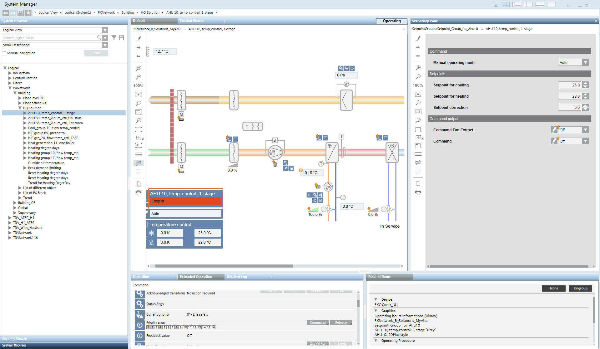

Desigo PX
This section includes instructions for specific scenarios in Desigo PX.
Prerequisites:
- The System Browser is in Operating mode.
Operating the Heating Curve
You can operate the Desigo PX heating curve directly in the graphic or in the Operation tab.

- In System Browser, select logical view.
- Select Logical > [hierarchy name] > [hierarchy level 1-n] > [heating group] > [heating curve].
- The Default tab displays with the heating curve graphic.
- In the graphic, select the option:
- Flow temperature setpoint, Max or Min
- Temperature setpoints low, outsideor flow
- Temperature setpoints high, outsideor flow
- Radiator exponent
- Setpoint correction to flow temperature
Plant Operator Tableau
A plant operator tableau includes the most important information to control a plant. The operating state, setpoints, or output can be easily operated. NOTE: This function is not available on all projects.

Open Plant Tableau
- In System Browser, select Application View.
- Select Applications > Graphics > [graphics page].
NOTE: The plant tableau opens when the graphic page is configured as the first page to be opened. - The plant tableau opens as follows if the plant page is opened:
- If the plant graphic is opened, click
 .
. - If the plant graphic is opened, click the Related items tab.
a. Select Graphics.
b. Click the link for the plant tableau. - The plant table displays.
Control the Plant
- Select the appropriate plant switch.
- In the drop-down list, select option Off, On, Auto, Stage 1, Stage 2.
- The selected value is executed directly.
Changing a Setpoint
- Select the appropriate setpoint.
- Enter a new value.
- The entered value is executed directly.
Switching Output
Manual switching is written at BACnet priority 8.
- Select the appropriate output.
- In the drop-down list, select option Off, On, Stage 1, Stage 2.
- The selected value is executed directly.
NOTE: Switching can only be executed as long as no security functions are pending.
Release Output
Manual switching is released at BACnet priority 8.
- Select the appropriate output.
- Click .
- The output is released. The application program exercises control.